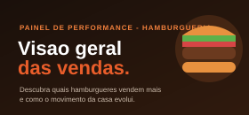
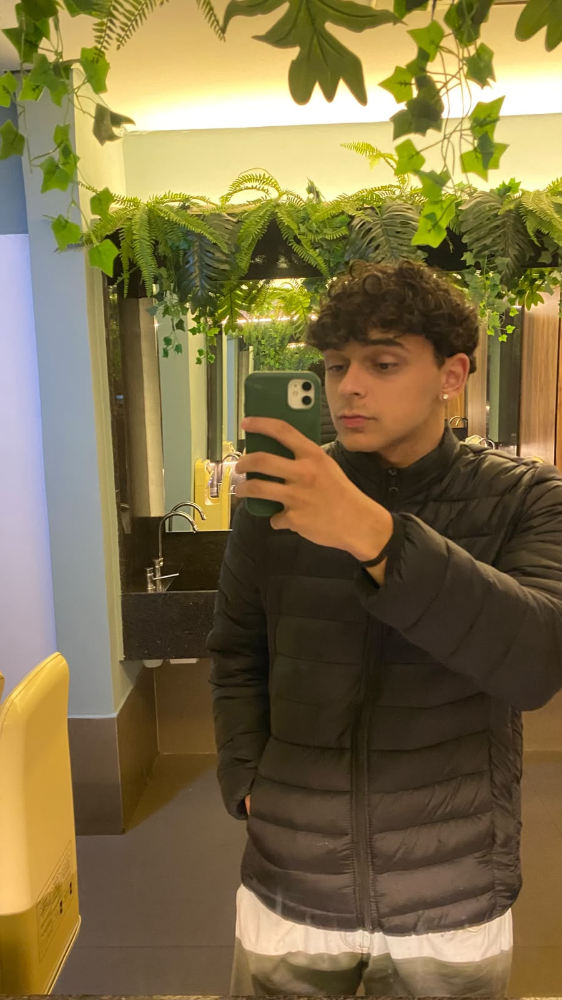
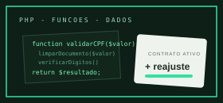

Burguer Analytics
Dashboard de vendas com filtros, indicadores, gráficos e comparação de bases CSV. Construído com JavaScript puro; Chart.js e Papa Parse são usados nos gráficos e na leitura de arquivos.
Ver no GitHub
Estudante de Desenvolvimento de Sistemas
Aqui você encontra meus projetos, minhas habilidades e um pouco sobre mim.
Me chamo Pietro Olimpio, Tenho 16 anos e sou estudante de Desenvolvimento de Sistemas no Senai. Comecei a mexer com programação por curiosidade e agora quero seguir como profissão. Ainda estou em Desenvolvimento, mas cada dia aprendendo algo novo.
Sempre preferi Back e banco de dados, mecher com IA, principalmente de pegar alguma base de dados e extrair as informações dela com pandas e seaborn (imgs) com CSS. Em cursos FIC já fiz páginas dashborad de uma Hamburgueria, um outro site de apresentação.
Quando tenho tempo livre gosto de fica jogando ou testar meu Claude, ouvir música e passar um tempo com a família e minha namorada. As vezes eu fico olhando o Trendings do github pra ver se acho alguma skill nova.

Dashboard de vendas com filtros, indicadores, gráficos e comparação de bases CSV. Construído com JavaScript puro; Chart.js e Papa Parse são usados nos gráficos e na leitura de arquivos.
Ver no GitHub
Central de atendimento e cadastro para clientes e contratos. Minha contribuição foi desenvolver a biblioteca de funções em PHP: validação de CPF e e-mail, formatação de valores e cálculo de reajustes..
Ver no GitHubgerenciar o cardápio e o estoque da Cantina Sr. Leão do SENAI. Permite cadastrar, listar, buscar, atualizar e excluir produtos da cantina, persistindo os dados em um banco MongoDB.
Ver no GitHubMe encontre nessas plataformas:
Jogos: Jogo quanto tenho tempo e vontade.
Música:Sempre to escutando musicas.
Séries e filmes: Prefiro de comedia e ação.
Esportes: Academia.
Curiosidade: Existe um repositorio no GitHub, que disponibiliza o Claude Code e outras IA de graça.
Quer falar comigo? Me chame no WhatsApp ou no LinkedIn.
Chamar no WhatsApp